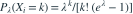
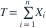
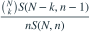
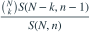
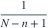
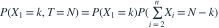
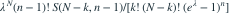
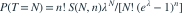

设  独立同分布，
独立同分布，
独立同分布，
，，。记
，n是样本量。 表示把a个不同元素分成b个非空、无标号组的第二类Stirling数。设 ，给定T=N，其中N为整数且 。对 ， 是？- A

- B
- C

- D

我已思考，展开答案与解析
正确答案：A
- 用

。 - 分子为

。 - 除以

，所有λ因子消去，得到正确式。 - 另外n−1个观测至少各占1，所以k最大为N−n+1，范围外概率为0。
易错提醒普通泊松可取0，零截断模型不可取0；这里的单个条件分布不是未经调整的Bin(N,1/n)。
零截断泊松 · 回忆进阶重建 · NIST DLMF 26.8.12；利用独立性与条件概率独立推导
根据考后回忆原创重建，非已核实考试原题；模型条件与数字已明确补全。
查看参考来源